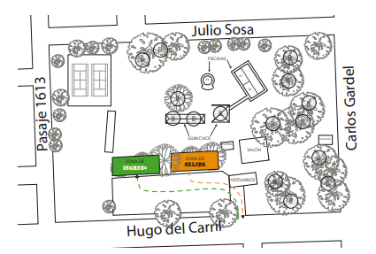

<html lang="en">
<head>
    <meta charset="UTF-8">
    <meta http-equiv="X-UA-Compatible" content="IE=edge">
    <meta name="viewport" content="width=device-width, initial-scale=1.0">
    <title>Protocolo</title>
    <link rel="stylesheet" href="./css/style.css">
    
    <link href="https://cdn.jsdelivr.net/npm/bootstrap@5.0.0/dist/css/bootstrap.min.css" rel="stylesheet" integrity="sha384-wEmeIV1mKuiNpC+IOBjI7aAzPcEZeedi5yW5f2yOq55WWLwNGmvvx4Um1vskeMj0" crossorigin="anonymous"> 
</head>
<body background="./resources/spots.jpg">
  <!--BARRA DE NAVEGACION Y TITULO-->
<header class="gradient">
  
  <div class="contenedor">
      
      
      
     
  </div>
  <nav class="navbar navbar-expand-lg navbar-light bg-light">
      <div class="container-fluid">
        <a class="navbar-brand" href="quienesSomos.html">QUIENES SOMOS</a>
        <button class="navbar-toggler" type="button" data-bs-toggle="collapse" data-bs-target="#navbarNavAltMarkup" aria-controls="navbarNavAltMarkup" aria-expanded="false" aria-label="Toggle navigation">
          <span class="navbar-toggler-icon"></span>
        </button>
        <div class="collapse navbar-collapse" id="navbarNavAltMarkup">
          <div class="navbar-nav">
              <a class="nav-link" href="dondeEstamos.html">DONDE ESTAMOS</a>
              <a class="nav-link" href="galeria.html">GALERIA DE FOTOS</a>
              <a class="nav-link" href="index.html">VOLVER AL MENU</a>
          </div>
          <div>
            
          </div>
        </div>
        
      </div>
    </nav>
    >
  <div class="contenedor__titulo">
      <h1>Diversión para tus vacaciones!</h1>
      
      </div>
  >
</header>
<main>
    <div" >
        
    </div>
    <div class="containerProtocolo">
      <p class="textoProtocolo">En este año tan particular de pandemia, 
        habrá cambios en el funcionamiento habitual 
        de la colonia. Las siguientes medidas, son las 
        vigentes y quedan sujetas a nuevas modificaciones en caso de flexibilizarse o restringirse. <br>
        1. Con el fin de reducir el tiempo de contacto 
        con las personas que concurren a la temporada, modificamos el horario, reduciéndolo a 
        3,5 hs. Esto implicará terminar la colonia una 
        hora antes de lo habitual en el turno tarde 
        (16.30 hs).<br>
        2. Los espacios de ingreso y salida estarán 
        bien delimitados con el fin de reducir contactos entre los chicos, al igual que los momentos de pago de cuota y el lugar donde se 
        efectuará. <br>
        3. Los grupos estarán conformados por 10 
        chicos por profesor, sumando un auxiliar 
        itinerante por cada franja etaria que asistirá al 
        grupo de forma externa para que el profesor a 
        cargo no necesite dejar el grupo en ningún 
        momento, ya sea en la búsqueda de materiales, acompañar al baño a los más pequeños, 
        seguridad en el momento de pileta, etc. <br>
        4. Los miembros de cada grupo formarán una 
        burbuja y no tendrán contacto con los de los 
        demás grupos, como tampoco podrán 
        intercambiarse. <br>
        5. Las actividades se verán reducidas a las 
        de 3 a 13 anos
        7°Temporada.
        2020/2021
        que sean adaptables a los protocolos 
        vigentes. <br>
        6. Las actividades especiales, como la 
        jornada, el campamento y la fiesta de cierre 
        se realizarán en caso de ser habilitadas. <br>
        7. Se tomarán todas las medidas preventivas 
        pertinentes, como ser: tomado de temperatura en el ingreso, sanitización constante, 
        grupos reducidos dentro de la pileta, burbujas cerradas, distanciamiento social preventivo, uso de barbijo en todo momento, 
        excepto en los juegos y deportes. <br>
        8. Días de lluvia: Habitualmente los días de 
        lluvia son destinados a manualidades, cine, 
        juegos de mesa, etc. Estas actividades se 
        realizan en los quinchos y el salón. En este 
        contexto no está permitido el uso del espacio 
        cerrado y los espacios de distanciamiento 
        nos implican no poder sostener la capacidad 
        habitual de concurrencia. Por todo esto, les 
        pedimos que en los días donde llueve en el 
        momento de colonia, haya llovido previamente lo suficiente como para anegar los 
        espacios verdes o esté próximo a llover, no 
        envíen los chicos a la colonia. Así mismo, en 
        caso de ser necesario enviarlos por motivos 
        laborales o de organización, la colonia 
        funcionará en los horarios habituales.

      </p>
      
    </div>
</main>

<footer>
    <main class="footer">
        <h3 class="contacto">Contacto</h3>
        <p class="telefono">Telefono: 3416821562</p>
        <p class="club">Club Residencial Fisherton</p>
        <p class="direccion">Hugo del Carril 8902. Rosario</p>
        
    </main>
</footer>

    
</body>
</html>